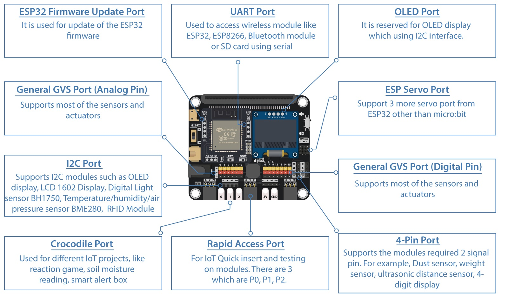
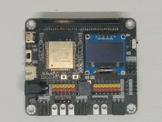

2. IoT:bit Introduction¶
2.1. Introduction¶
Smarthon IoT Bit is an IoT orientated expansion board for Micro:bit. With the help of this, Micro:bit able to connect to different sensors or actuators without welding and start to use the internet services.
It provides 13 regular GVS socket, allow user to connect batch of sensors at the same time to receive group of data. For some special purpose sensors/actuator, such distance sensor, motor and OLED display, an independent socket are offered, so not only the digital and analog I/O device can use in project, but also I2C device become an option to the Micro:bit from now on. Last but not least, a buzzer is built-in on the board to provide sound generation.
Several of wireless modules are compatible with the Smarthon IoT Bit, such Bluetooth and Wi-Fi modules. Beside of the commonly used Wi-Fi module ESP8266, the advanced version ESP32 is available to use on the IoT Bit too. After connect to internet, user able to enjoy the abundant internet resource to create the IoT project.

2.2. Product Features¶

The Most powerful IoT chip ESP32 embedded for micro:bit
Exchangeable wireless modular design (ESP8266, ESP32, BLE)
Integrated OLED and Onboard buzzer embedded
Extended I/O port x13, I2C port x2 from mirco:bit with GVS socket
Extended Servo port x3 from ESP module
Various types of power supply (USB, 3.7V lithium battery, 6V Normal battery)
Extra Port: Crocodile Pin, Quick Access Port and 4-Pin Port for different usage

2.4. Specification¶
| Item | Parameters | Remarks |
|---|---|---|
| Size | 75mm X 65mm X 20mm | Without Packing |
| Power supply | USB:5V 0.5A XH2.54 Battery port:3.7~6V 1A DC 5.5mm:3.7~6V 1A |
Maximun current limit of whole board: 1A |
| Operation Temperature | -25 to 80℃ | |
| Buzzer | Passive Buzzer(Musical) | |
| Wireless Module | ESP8266 ESP32 Bluetooth |
Operate under UART protocol |
| OLED Module | 128*64 resolution OLED Screen SSD1306 |
Operate under I2C protocol |
| Mirco:bit lead out | 13 I/O Pins (13 Digital & AnalogOut Pins) (6 AnalogIn Pins) |
Reserved Pins: Wireless module:P8,P16 Distance Sensor:P14,P15 Motor:P12,P13 |
| I2C Pins | P19,P20 | 3 available ports, 1 port reserved for OLED |
| ESP lead out | 3 Pins for servo control(S1,S2,S3) | Control by ESP chip |
| Net weight |
2.5. Pinout Information¶
Pinout Diagram:

Port Diagram:

Please open the image in the new tab for full size
Pinout Table
| Type | Mirco:bit | IoT:bit | Extra Port | |
|---|---|---|---|---|
| Analog | P0 | Buzzer | Rapid Access Port | |
| P1 | Rapid Access Port | |||
| P2 | Rapid Access Port | |||
| P3 | LED | |||
| P4 | LED | |||
| P10 | LED | |||
| Digital | P6 | LED | ||
| P9 | LED | |||
| P12 | 4-Pin Port | |||
| P13 | SPI(SCK) | 4-Pin Port | ||
| P14 | SPI(MISO) | 4-Pin Port | ||
| P15 | SPI(MOSI) | 4-Pin Port | ||
| Serial | P8 | UART(TX) | ESP32(RX) | |
| P16 | UART(RX) | ESP32(TX) | ||
| I2C | P19 | I2C | OLED(SCL) | |
| P20 | I2C | OLED(SDA) | ||
| External Servo |
S1 | ESP32(23) | ||
| S2 | ESP32(22) | |||
| S3 | ESP32(21) |
2.6. Detail Hardware Description¶

List
Mirco:bit edge connecter
Power port(USB, Battery, DC) & Switch
OLED Module
Wireless Module
ESP Servo Port
Micro:bit lead out Pins
Buzzer & Switch
Rapid Access Port
4-Pins Module Port
Mirco:bit edge connecter

Provide the socket for the Micro:bit to install. Follow the instruction icon right about that to install the Micro:bit to the expansion board.
Power port(USB, Battery, DC) & Switch

Provide three different type of methods to power on the expansion board and Mirco:bit. User can either choose common 5V USB power, or two different port which connect to 3.7V ~ 6V battery box.
OLED Module

The expansion board have the reserved space to place a SSD1306 0.96 inch OLED screen. User can use the I2C connection port to output the visual element on that module.
Wireless Module

The Wireless Module provide the Core function of the expansion board. Though different modules install on the socket, Mirco:bit gain the correspond connectivity ability. User may install ESP32, ESP8266, Bluetooth to implement various application project, make use of the IoT resource.
ESP Servo port

When installed the ESP32 module, it provide extra 3 servo control port to connect the Servo motor. Compatible with general GVS 180/360 Servo motor (SG90/SG90S)
Micro:bit lead out Pins

The Lead Out from the Mirco:bit I/O pins, provide great expansion feature for the Mirco:bit , user can connect up to 13 different sensor/actuator at the same time. Each independent GVS socket make the connection become more connivance.
Buzzer & Switch

The IoT Bit built-in a Passive Buzzer on the board, which connected to P0. Using the program can generate different tone of sound. With the switch, it can have manual control to the audio.
Raqid Access Port

To some GVS sensor which provide the Rapid Insert Pin, it can use on the Rapid Access Port. It do not need to use the cable to connect the sensor, simplify the product in the application.
4-Pins Module port

On the IoT Bit, two ports are reserved for the 4 Pins Module. Each port can connect to some sensors or actuators which required use two I/O Pins at the same time, such Distance Sesnor and Motor. In total, there are 4 I/O Pins being used, they are P12, P13, P14, P15 respectively.
2.7. Software Support¶
MakeCode editor
The MakeCode editor is the official cross-platform editor designed for BBC Mirco:bit, it is available on Web Browser, Mobile and tablets Apps. The Colorful coding block is familiar to who previously used Scratch, providing a simple and clear way to programming on the Micro:bit.
The editor offer a text-based mode for user to programming using JavaScript rather than drag the blocks
MakeCode

Python editor
Python is one of the most famous programming language, widely used in school and industry. Micro:bit provided an online python editor for user to study and exercise python on Micro:bit. User just need to connect Mirco:bit with USB and click the Flash button, the compile and upload progress will be finish automatically.
Python editor

2.8. Quick Start¶
1.Plug the Mirco:bit(with Program) into the the slot

2.Get the power supply and turn on
Method 1:
Plug the USB cable into the USB port and turn on the switch

Method 2:
Plug the battery case(1.5V AA*4) into the battery port and turn on the switch